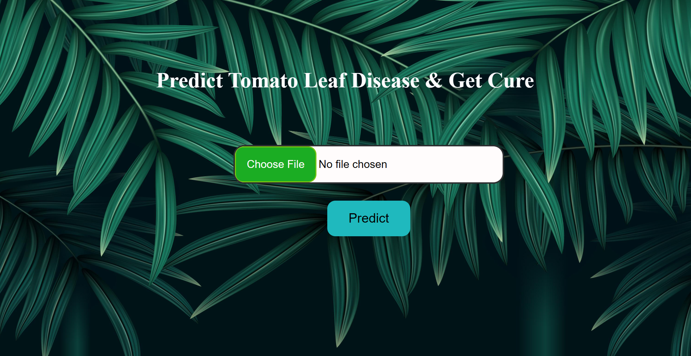
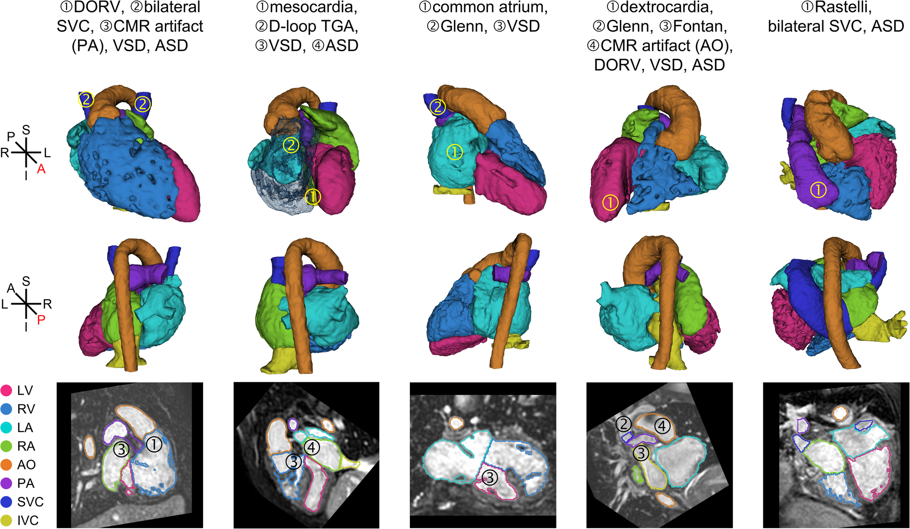

Developed hybrid deep learning models (LSTM &
Transformer) for stock price prediction with 96%
R² and minimal RMSE
Enhanced predictions using rolling statistics and volatility
metrics.
Built a data pipeline for preprocessing and normalization to optimize forecasting
performance.

AgriProtech
AgriProtech

Cardiopathie
Cardiopathie
Designed CNN models (Inception ResNet v2, VGG, ResNet-50)
achieving 94% segmentation accuracy on 2400 CT images,
classifying calcium-positive and calcium-negative cases using NRRD medical datasets.
Developed a pipeline validated on 20,084
CT scans, achieving >90% precision in calcium score
prediction, significantly improving diagnostic speed and
reducing manual intervention.
Leveraged TensorFlow and SimpleITK for efficient preprocessing and segmentation, reducing computation time by 30% on 4GB GPU hardware,
ensuring scalable clinical deployment.
Speech Emotion Recognition
Speech Emotion Recognition
Trained a 5-layer MLP (256-128-64 neurons, ReLU activation, Adam optimizer) on the
RAVDESS dataset (1,440 audio clips, 24 actors, 8 emotions including happy, angry,
neutral).
Processed audio at 48kHz sampling rate using Librosa: Extracted 40 MFCCs, spectral
centroid, and zero-crossing rate with a frame length of 2048 and hop length of 512.
Hybrid feature fusion: Combined audio features with 300-dim TF-IDF vectors from speech
transcripts (NLP) using Scikit-learn, creating a 346-dim input vector per sample.
Speech Emotion Recognition
Speech Emotion Recognition
Trained a 5-layer MLP (256-128-64 neurons, ReLU activation, Adam optimizer) on the
RAVDESS dataset (1,440 audio clips, 24 actors, 8 emotions including happy, angry,
neutral).
Processed audio at 48kHz sampling rate using Librosa: Extracted 40 MFCCs, spectral
centroid, and zero-crossing rate with a frame length of 2048 and hop length of 512.
Hybrid feature fusion: Combined audio features with 300-dim TF-IDF vectors from speech
transcripts (NLP) using Scikit-learn, creating a 346-dim input vector per sample.